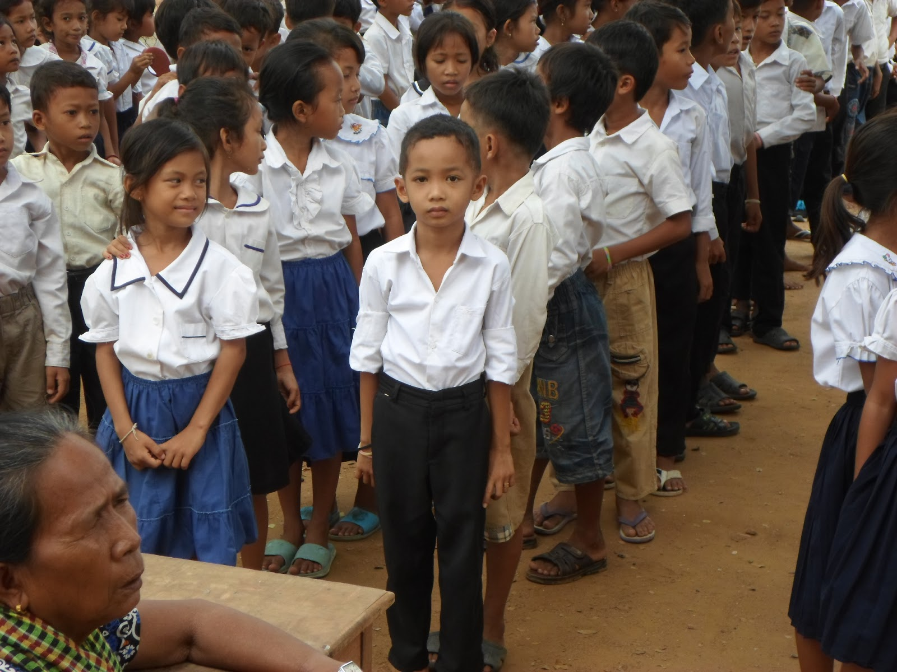

ខេត្តតាកែវមាន ៤រដូវគឺ រដូវរងា ចាប់ពី វិច្ឆិកាដល់ខែកុម្ភៈ និង មានរដូវលំហែរមានប្រាំង និង វស្សា ចាប់ ខែមិនា ដល់ខែឧសភា រដូវភ្លៀង មានចាប់ពី ខែមិថុនា ដល់ខែតុលា។ ទីក្រុងដូនកែវ ខេត្តតាកែវ គឺជាក្រុងដែលមានភ្លៀងធ្លាក់ច្រើន នៅថ្ងៃដែលក្តៅ មានកំដៅរហូតទៅដល់ ៣៧អង្សា
ហើយបើត្រជាក់ជាងគេវិញមានរហូត ២១អង្សា ។

ខេត្តតាកែវមាន ៤រដូវគឺ រដូវរងា ចាប់ពី វិច្ឆិកាដល់ខែកុម្ភៈ និង មានរដូវលំហែរមានប្រាំង និង វស្សា ចាប់ ខែមិនា ដល់ខែឧសភា រដូវភ្លៀង មានចាប់ពី ខែមិថុនា ដល់ខែតុលា។ ទីក្រុងដូនកែវ ខេត្តតាកែវ គឺជាក្រុងដែលមានភ្លៀងធ្លាក់ច្រើន នៅថ្ងៃដែលក្តៅ មានកំដៅរហូតទៅដល់
៣៧អង្សា ហើយបើត្រជាក់ជាងគេវិញមានរហូត ២១អង្សា ។
សេដ្ឋកិច្ចខេត្តតាកែវជាមូលដ្ខានគឺពឹងផ្អែកលើការធ្វើកសិកម្ម ការនេសាទ, ការដាំដំណាំស្រូវនិងផ្លែឈើ ជាពិសេសគឺនៅតាមជនបទ។ ចំណែកនៅតាមទីប្រជុំជនវិញ ប្រជាជនច្រើនប្រកបរបរលក់ដូរ និងការប្រកបរបរអាជីវកម្មផងដែរ។ ហើយក៏មានសក្ដានុពលផងដែរចំពោះវិស័យទេសចរណ៍។
ចំនួនប្រជាជននៅក្នុងខេត្តនេះមានប្រហែល ៩២៤,៧៥៨ នាក់ ឬ ៦,៤% នៃចំនួនប្រជាជនសរុបនៅក្នុងប្រទេសកម្ពុជាដែលមានចំននួន (១៤,៣៦៣,៥១៩ នាក់, ឆ្នាំ ២០០៧, ទិន្នន័យខេត្ត), ដែលមាន ប្រុសចំនួន ៤៤៥,០០០នាក់ និងស្រីចំនួន ៤៧៩,៧៥៨ នាក់។ ដែលក្នុងនោះជាមធ្យម ១គីឡូមែត្រការេ
មានប្រជាជនរស់នៅចំនួន ២៥៩.៥ នាក់។



.jpg)